When working with time-series data (or any dataset with 1 distinct y-value for each x), there often arises a practical need to develop & optimize a transformation. For example, moving average is used in a wide variety of settings ranging from Daily COVID hospitalizations to financial technical analysis. Such metrics have enormous potential public and/or business implications. This warrants extensive testing prior to implementing a transformation used to generate metric of interest.
Whether it’s due to cost or time, the lack of real-world data is a probable challenge in this setting - necessitating the generation of simulated data. However, it might not be feasible or cost-effective to develop a rigorous model fully characterizing the phenomenon of interest. Any coordinates following an arbitrary (yet continuous) trajectory might be sufficient to test and optimize a transformation. meandr is designed to fulfill this need.
Each call to meandr() outputs coordinates from a continuously-differentiable-piecewise-polynomial. In other words: a 2nd-order spline.

You can supply arguments if you wish to change default curve behavior. These are discussed in the next section.
meandr( n_nodes = 100L, # number of inflection points (more nodes -> more intricate curve) wt = c(1, -1), # values used to generate 2nd derivative (these are sampled with replacement) gain = 0.75, # controls sensitivity of wt sampling n_points = 100L, # number of coordinates (aka resolution) scale = 1, # scales all f(t) values so that max(f(t)) == scale seed = NULL # for reproducibility )
In general, modulating n_nodes should provide sufficient control. Here, the nodes correspond to inflection points.

Holding seed constant at 2, observe that increasing n_nodes allows below function to meander into new territory. In other words, df2 is just an augmented variation of df1.
Each call to meandr first constructs a piecewise step-function by sampling elements from input wt. The resulting step-function serves as the 2nd derivative, \(f''(t)\), which meandr integrates twice to obtain final result.
This complete procedure is shown below:
The wt sampling forming \(f''(t)\) utilizes a special algorithm that strives for alternating positive & negative values. This is to prevent meandr from generating “boring” curves.
Increasing input gain will increase the sensitivity of the wt sampling algorithm, ultimately resulting in a curve with greater local variation. Note, however, that the local effects of changing gain will cascade with increasing \(t\), resulting in an altogether different curve for the same seed.
gain1 <- meandr(n_points = 200, n_nodes = 50, gain = 0.75, # default seed = 1010) gain2 <- meandr(n_points = 200, n_nodes = 50, gain = 2, # increase, this will inject more variance into 2nd derivative seed = 1010)
The default value of wt, c(1, -1), is appropriate for lower levels of gain near 0.75. However, gain2 curve above looks slightly unnatural, as one can clearly tell this is simply a series of pure quadratic polynomials chained together. We can avoid this effect by adjusting wt.
custom_wt <- meandr(n_points = 200, n_nodes = 50, wt = seq(-1, 1, by = 0.01), # more variety in 2nd derivative values gain = 2, seed = 1010)
Beware! The wt algorithm passes gain to exp(), so you won’t observe much difference as \(e^{gain} \rightarrow \infty\). I recommend starting at the default value of 0.75 and making incremental adjustments as needed.
gain3 <- meandr(gain = 1000) # 1000 doesn't work because exp(1000) returns Inf #> Error in sample.int(length(x), size, replace, prob): NA in probability vector
Use n_points to adjust output resolution. This does not affect underlying calculus driving curve shape. Example below uses same seed 2 as before.
meandr will adjust output so that \(max(f) = scale\).
library(purrr) scale <- map_dfr(1:5, ~ { meandr(n_points = 100, n_nodes = 20, wt = c(1, -1), scale = .x, seed = 20) %>% mutate(scale = .x) })
This is useful if you want to supplement meandr curve with additional noise. In example below, relative amplitude of noise is consistent across different meandr curves because we use fixed scale.
